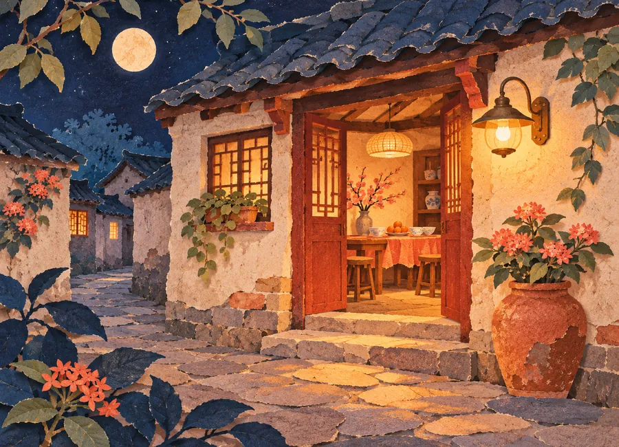
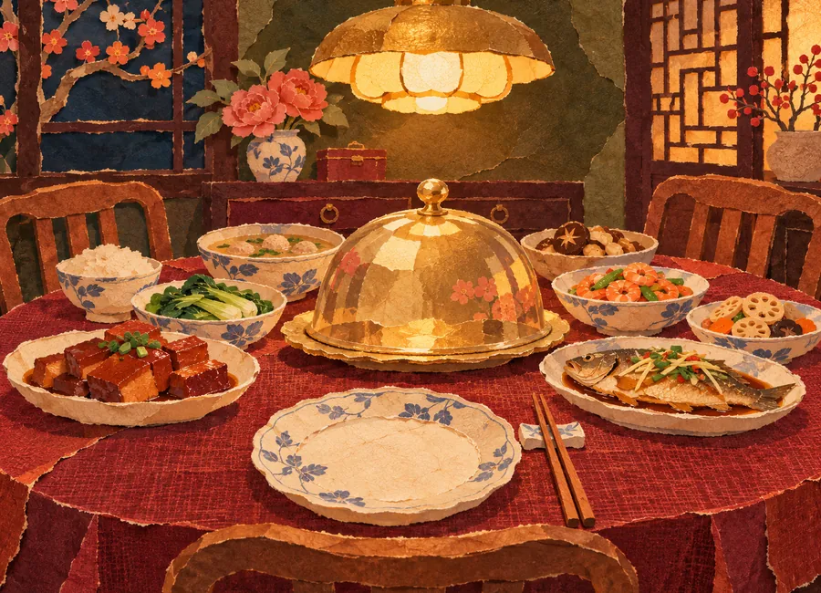
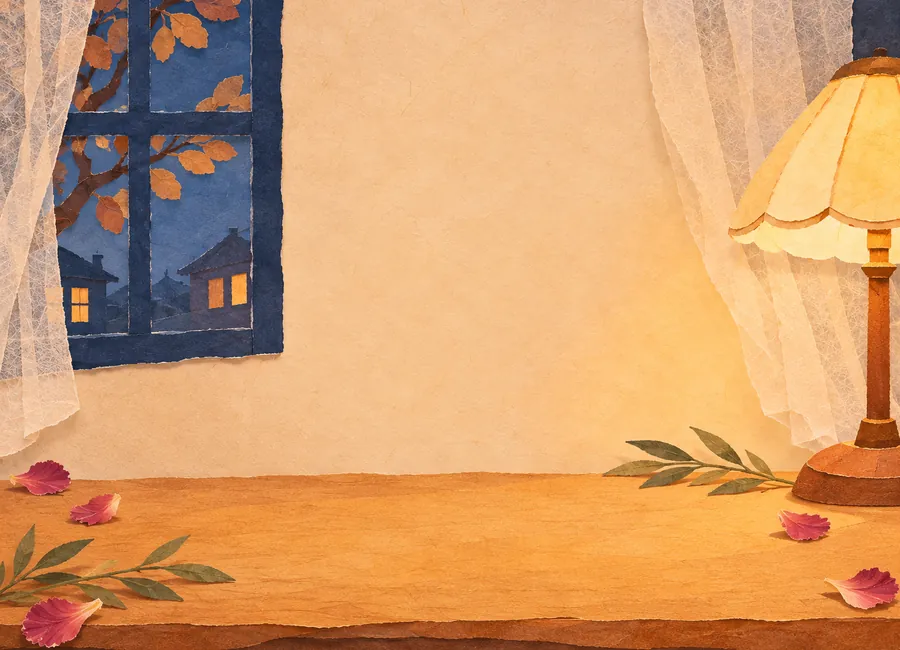
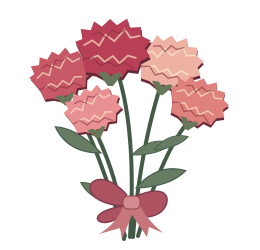
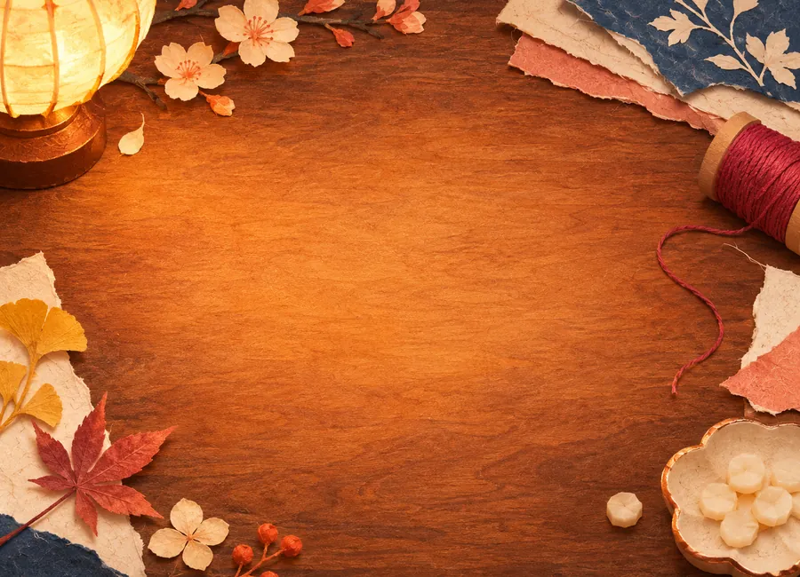
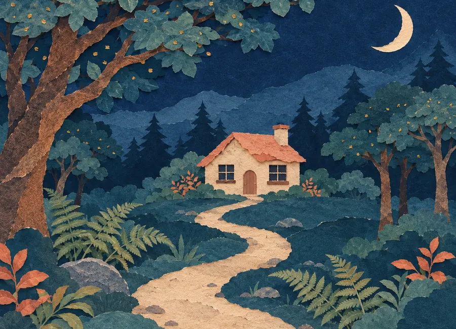
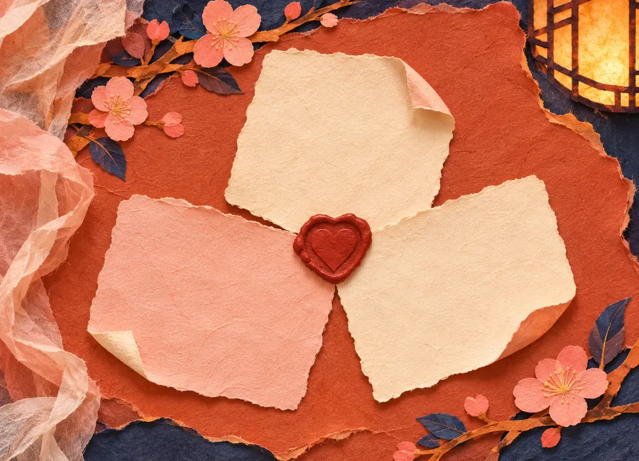

一本手作的小书
写给妈妈
巷子里的灯亮了，饭也做好了。回来先坐一会儿，我们把攒了一路的心意，慢慢翻给你看。


给妈妈的生日
约十秒的小短片，之后翻开一本纸书
一本手作的小书
巷子里的灯亮了，饭也做好了。回来先坐一会儿，我们把攒了一路的心意，慢慢翻给你看。


窗边散着几片花瓣。拉一下纸签，把整束康乃馨送给妈妈。

花底下压着一封信。还有一句没写完的话，留给下一页的海。
把信里没说完的话卷进小瓶子。按下瓶塞，潮水会把它送过灯塔。
纸条正在漂向灯塔……
灯塔接住了这张纸条：

过了海就是林子。点亮路边的五盏纸灯，把灯塔照过的路接回家。
已点亮 0 / 5

萤火飞到家门口，一点光就变成一张短笺。写下想留下的话，也可以让这些祝福开满屏。
先把海风、萤火和写下的话夹进书里。饭桌上还留着最后一道甜的，等你亲手揭开。
晚饭好了，最后一道是甜的